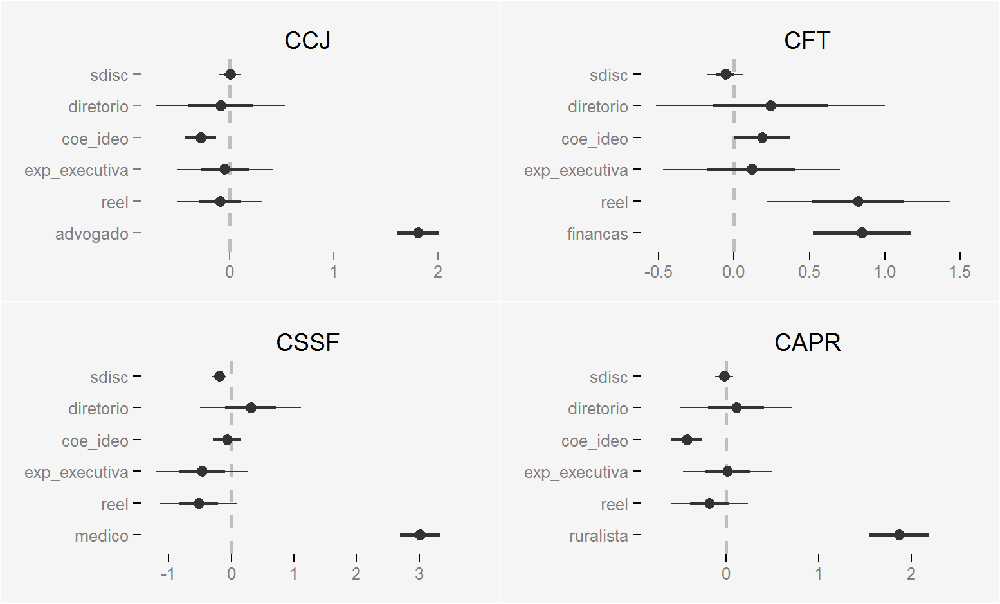
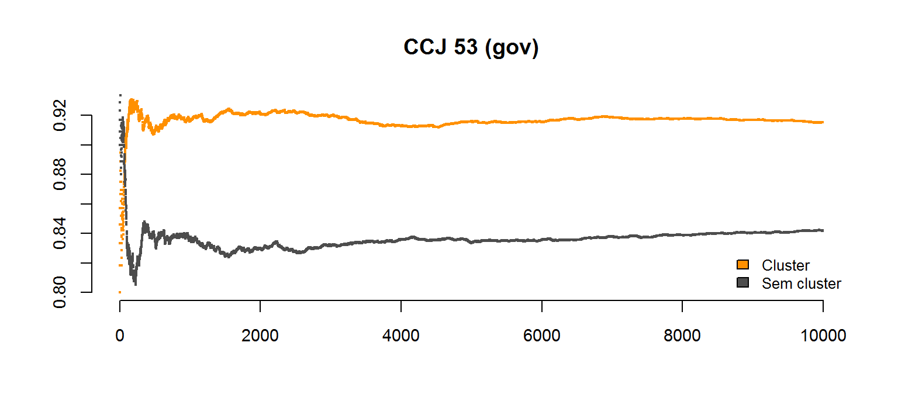

- Comissões não são necessárias para o funcionamento de um Congresso. Por que elas existem?
- Quem entra entra em cada uma delas? E por quê?
- Se pudermos responder esta última, podemos inferir a resposta da anterior.
Fernando Meireles (UFRGS/Capes)
A literatura sobre o Congresso Americano produziu três modelos principais:
Parâmetros incompatíveis:

Comparar a estatística (média e mediana) empiricamente observada de cada partido em cada Comissão com as obtidas a partir de amostras aleatórias dos membros de cada partido.
Agregação todos os partidos para simular os valores sob a hipótese nula de cada Comissão (simulação com cluster).
Aceitar H1 se p for menor que um \(\alpha\) (e. g., 0.1), onde p é a razão das vezes em que a estatística observada foi maior do que as simuladas.


| Comissão | Leg. 52 | Leg. 52 (gov) | Leg. 53 | Leg. 53 (gov) |
|---|---|---|---|---|
CCJ |
.38 |
.93 |
.65 |
.91 |
CFT |
.74 |
.98 |
.54 |
.75 |
CAPR |
.41 |
.83 |
.74 |
.34 |
CSSF |
.89 |
.84 |
.97 |
.54 |
CECD |
.49 |
.42 |
.85 |
.85 |
| Comissão | Leg. 52 | Leg. 52 (gov) | Leg. 53 | Leg. 53 (gov) |
|---|---|---|---|---|
CCJ |
.31 |
.96 |
.92 |
.87 |
CFT |
.9 |
.98 |
.43 |
.44 |
CAPR |
.59 |
.29 |
.39 |
.56 |
CSSF |
.47 |
.88 |
.82 |
.96 |
CECD |
.83 |
.53 |
.15 |
.85 |
Na CCJ, o PMDB indicou membros significativamente menos disciplinados (gov. e part.) nas duas Legislaturas; na CFT, na Legislatura 52; e na CSSF, na 53;
Na CAPR, o PFL indicou membros significativamente mais disciplinados na Legislatura 53;
Nos demais casos, nenhum padrão aparente.